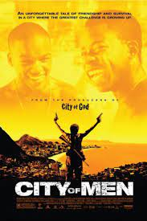

Sinopse: Amigos de infância, Acerola e Laranjinha estão se aproximando dos 18 anos. Acerola cria seu filho sozinho, já que a mãe vai trabalhar em São Paulo. Laranjinha tenta encontrar seu pai, sumido há muito tempo. Eventualmente, Laranjinha o encontra e fica sabendo que ele acabou de cumprir uma pena de 15 anos na cadeia. À medida que verdades do passado surgem, os dois amigos têm sua amizade testada.